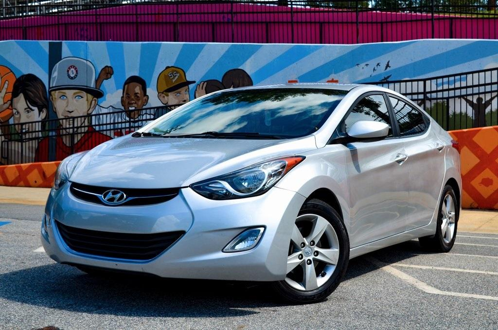

Lab 6: Arrays and Objects
Challenge
Restate the challenge of the lab here.
Working with your partner, experiment with JavaScript arrays and objects.
Problems
What problems arose? How did you solve them?
Just getting used to JavaScript. Coding more and more makes me get used to it a bit more.
Reflection
Put your reflections about this assignment here. How did it go? What kind of energy did you put into the assignment?
I thought it was okay. To be honest I kind of was a little lazy doing it, but it was quick (and that's kind of why I was lazy).
Results
You're looking at them!!
Lab Report #6